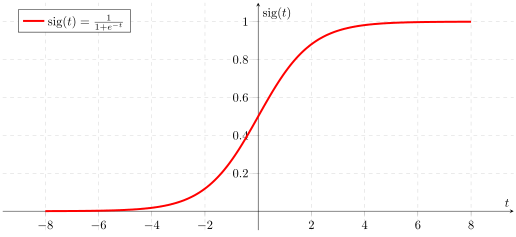

Machine Learning
No magic, just math!
Roman Tilgner
Roman Seyffarth
@urlaubsgimpel
Document / Spam Classification
Optical Character Recognition (OCR)
Face Recognition
Image Analysis
Recommender Systems
Clinical Decision Support Systems
Weather / Natural Disaster Prediction

Self-Driving Cars

Artificial Intelligence
Introduction
Machine learning is the field of study that gives computers the ability to learn without being explicitly programmed.
– Arthur Samuel (1959)
The Task
| Property Feature | Value |
|---|---|
| Height | 1.8m |
| Eye Color | green |
| … | |
- Value
- Class / Label
Supervised Learning
The algorithm learns based on pre-labeled example data.
Unsupervised Learning
The algorithm should figure out structure in the data on its own.
Algorithm Overview
Value Prediction
Linear Regression
Tree-based Regression
Classification
K-Nearest Neighbors
Naïve Bayes
Decision Trees
Logistic Regression
SVMs
Neural Networks
Clustering
K-Means
Hierarchical Clustering
Mixture Models
Linear Regression
| Team Communication (h/day) | Work Efficiency (%) |
|---|---|
| 0.1 | 2 |
| 0.5 | 40 |
| 1.5 | 80 |
| 2.0 | 100 |
| 3.0 | 75 |
| 2.5 | ??? |


Choose the best polynomial:
\(y = \Theta_1x + \Theta_2\)
\(y = \Theta_1x^2 + \Theta_2x + \Theta_3\)
\(y = \Theta_1x^3 + \Theta_2x^2 + \Theta_3x + \Theta_4\)
…
Where is the learning part?

\(y = \Theta_1x^2 + \Theta_2x + \Theta_3\)
- Create a function with \(\Theta_{1-3}\) as variables that sums up the error (Cost Function)
- Find a minimum of the cost function using an approximation algorithm like Gradient Descent
- Use \(\Theta_{1-3}\) so that you get the smallest error
Libraries do that for you! \o/
Multiple features
Features: \(x_{(1)}\) and \(x_{(2)}\)
Both linear:
\(y = \Theta_1x_{(1)} + \Theta_2x_{(2)} + \Theta_3\)
\(x_{(1)}\) quadratic, \(x_{(2)}\) linear:
\(y = \Theta_1x_{(1)}^2 + \Theta_2x_{(1)} + \Theta_3x_{(2)} + \Theta_4\)
Linear Regression - Facts
- Computationally cheap once trained
- Not very flexible, because of linear model
- May be hard to find best polynomial / features
- Often used in recommender systems
Overfitting and Underfitting
\(y = \Theta_1x^2 + \Theta_2x + \Theta_3\)
Model is just right!
Follows the overall trend but skips outliers.

\(y = \Theta_1x + \Theta_2\)
Model is too simple: Underfitting / Low Variance / High Bias!
Bad performance on training set / predictions.

\(y = \Theta_1x^{6} + \Theta_2x^{5} + \ldots\)
Model is too complex: Overfitting / High Variance / Low Bias!
The model captures noise / outliers.
K-Means
- Choose number of clusters and initialize centers
- Assign points to cluster
- Calculate centroid and move cluster center
K-Means - Facts
- Algorithm is simple and scalable
- You have to specify the number of clusters in advance
- Result quality relies heavily on initialization of clusters
Neural Networks

\(y = g(\Theta_1 x_1 + \Theta_2 x_2 + \Theta_3 x_3)\)
\(\Theta_i\): Weights / parameters of the network. Learned by minimizing error on training data (Gradient Descent).
\(g\): The sigmoid function to get output between 0 and 1:
\(g(z) = {1 \over {1 + e^{-z}}}\) 
If \(y < 0.5\), classify as class 1, otherwise class 2.

Hidden Layers:
Layers between input and output layer to increase the complexity of the model.
Remember overfitting and underfitting!
Try different amounts of hidden layers and neurons in each layer for your problem.

More than 2 classes? No problem!
Use one \(y\) for each class. The one with the highest value between 0 and 1 wins.
Neural Networks - Facts
- Very flexible and able to model complex problems
- Prone to overfitting
- Computationally expensive during training
- Google's AlphaGo uses multiple neural networks
Demo
Popular Libraries
| Python |
Scikit-learn
|
PyBrain
|
|---|---|---|
| Go |
GoLearn 
|
|
| Java |
Apache Spark (MLlib)
|
Apache Mahout
|
| "Big Players" |
Tensorflow (Google) |
DSSTNE / "Destiny" (Amazon) |
Success depends primarily on the data,
not on using the best library!
So...
Just Data In, Knowledge Out?
Guidelines & Tips
- Choose the algorithm that best fits your data / problem
- Fine-tune the model / algorithm
- Visualize some of your features to get hints
- Try different configurations (maybe automated)
- Don't be afraid to start over / change features
Which Algorithm do I Need?
- Figure out, what algorithm category fits your problem (see earlier overview slide)
- Learn about each algorithm's advantages and disadvantages
- Look at some cheat sheets
{kind=link}
How to Learn More?
- Machine Learning @ Coursera (Link)
- Machine Learning in Action by Peter Harrington (Link)
- Trial and error with common libraries and sample data
Thank you!
Roman Seyffarth / @urlaubsgimpel